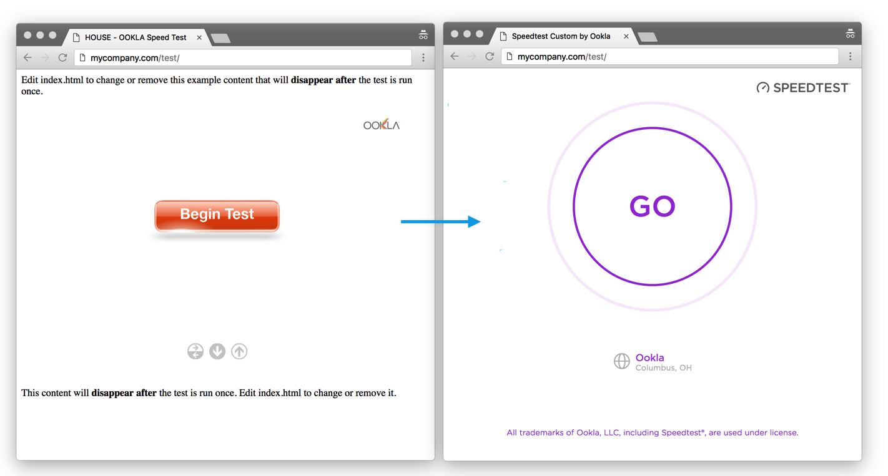

The Front-end Test UI is the client-side component your end-user see when they take a test. You can easily update your current NetGauge flash content you host on your website by adding a single HTML document to your web server.
Tip: Speedtest Custom is valid at over 200 front-test URLs you can quickly add/remove from your account Configuration > "Embed" panel. This will enable you to stage your new test in a test page on your server before you actually replace your current NetGauge content.
Prerequisite - Before you can update the test on your site, you must have already:
- Configured a Test URL where your site is licensed
- Authorized your website domain(s) as an Embbeded URL

Updating the client-facing content on your web server
Once your new STC test is set up to your satisfaction, and you have added your website as an authorized embed URL, you can update your website to use the new version.
In most cases, you simply need to update the HTML document file(s) on your web server to replace the legacy Flash content with your new STC test. By default, NetGauge's client-side (flash) content was rendered in an "index.html" file - although your webserver's layout may be much different. The steps below should be used as a general reference.
Note: If you were using the default NetGauge configuration, make sure to make a backup of your existing NetGauge HTML document (copy the "index.html" file, rename it to, e.g., "index_copy.html" - this will allow you to restore changes if needed quickly).
- Log into the server you use to host NetGauge's root web directory, or a subfolder, such as /netgauge
- Legacy Netgauge Licensed Clients - this location is defined by the license URL.
- Locate the HTML document currently used to render your flash/netgauge install (e.g., index.html)
- Depending on your web server, the required steps to locate your files will vary
- Update the current HTML document with the HTML5 code set up in your online configuration dashboard
- Review the Speedtest Custom template linked below
Template HTML Code
A template used for hosting an HTML document with your new STC test can be found please see the
Do I need to update my settings.xml file?
No! Your settings are stored in your online account, and you no longer need to keep track of settings files, license keys, or other test related configuration files. A single HTML file is all that is required to host the new test interface on your website.
Related:
For a detailed review of the legacy NetGauge layout, please see the KB article NetGauge: Client Installation & Configuration